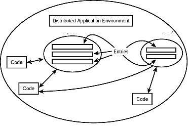
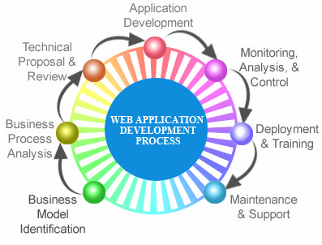

Web Application Services
E-Commerce
Market has changed over a period since the time of advent of internet in a big way. The potential consumers have grown enormously and seemingly everybody likes to make a difference on the web.
We bank upon CMS system for all our varied customers but constantly work through customizing the solutions to fit and scale up to their changing needs. The difference we make can be further fabricated on account of our great depth of understanding various CMS system that is available in open source market. The potential of open source market on web portal system is immense and a great deal of factors are attributed to its success.
We are currently working on Drupal, Joomla, Wordpress, opencart and oscommerce to derive the benefits of customers present in this global requirement.
Customized Software
We have a team of professionals working on .net, java and php, who have a great deal of experience and expertise in dealing with the requirements for any new application. Agile computing is backed by usage of various application framework like Struts, stripes in Java, DNN framework in dotnet, Zend and Cakephp in php. We are comfortable in both linux and windows based applications.
Popular webtools like ajax framework, jquery are being increasingly used for our customized projects along with great impetus on cloud computing.
Other Technologies:
- OLAP / ETL TOOLS / BI TOOLS
- WEB TECHNOLOGIES / CLIENT -SERVER / TESTING TOOLS
- DBA / SYSTEM ADMINISTRATORS / NETWORKING
- TIBCO / B2B & MIDDLEWARE DEVELOPMENT TOOLS
- ERP / CRM
- EMBEDDED SYSTEMS/RTOS For Mobile Computing
The team has a rich experience for delivering and customizing application for variousp{ class="icon-box wow fadeInUp" } segments like logistics, healthcare, mobile computing, logistic segment like transport segment, manufacturing sector and so also in specialized areas like telecom and android for mobile computing.
Professional Services
Our services are not only related to software development but goes beyond to address other software enabled services like IT Consulting, Domain expertise, Project Scope and Project Integration through Business / Systems / IT / Process Analysts, QA and Testing Analysts, Manpower Consulting, IT training, Corporate Training and Techno Functional Consultants.
Shared Risk and Partnerships
A meticulous means to achieve desired results is to work in a virtual incorporation of system. This mitigates clear understanding on topics that are not in our current domain of expertise. We take this shared risk and want to establish partnership with the entities that can make a difference to us in the long run. As a result we not only look beyond our dimensions to succeed but help and exploit the best possible resources on whom we can bank for mutual co-existence.
As a result of which we are closely bonding with entrepreneur individuals, corporate companies both at domestic and overseas market. The market potential enabled us to close the gap that exists between big conglomerates and newly budding corporate companies.
Quality Of Service
We are backed by a team of highly experienced professionals and the laid out philosophy that can leverage the best of the services in a professional manner and scale our expertise for your benefit. We strictly adhere to the demands of our clients and effectively provide them the best of services and address their needs along the project scale. We nurture the very best professionals and cope up to the strict working philosophy
WEB Methodology
A specialized team of management is vested to address the needs on day to day basis and process the requirement to our desired effect. We inculcate great degree of patience when it comes to understand the needs and requirement of our clients. Our simple model is based on our work ethics that can address most of our issues and reckon us to capitalize on them.
Customized and Client Specific Models
We adopt distribution co-ordination method for Client Server Computing that can address major limitation seen in client/server model because of its focus on clients requesting individual services. At times multiple services need to be invoked and coordinated to reflect inter relation aspect in services. The best example is task allocation in a collaborative workgroup system and task sequencing, routing applied in workflow applications.
Web Model
We do not strictly adhere to any specific model owing to varied requirements of our clients. The best viewed approach which is centric to all our development efforts can be worked along the following diagram as shown. The model is mainly on the lines of various phases of software development right from identification of the requirement to the point of deliver and followed by maintenance and support. Vast majority of project do constantly have to get upgraded and there lies constant add on of services to the existing project and therefore the cycle is an ongoing process in the life cycle for a project.
Spiral Model
The spiral model is based on the assumption on scientific approach and lay more emphasis on risk analysis. The spiral model consists of phases for Planning, Risk Analysis, Engineering and Evaluation. A software project undergoes repeated iterations (called Spirals in this model). The baseline spiral normally starts in planning phase thereafter requirements are gathered and risk is assessed for completion of over this phase of the project. Each subsequent spirals builds on the baseline spiral.
Requirements are gathered during the planning phase. In the risk analysis phase, a process is undertaken to identify risk and alternate solutions. A prototype is produced at the end of the risk analysis phase
Software is produced in the engineering phase, along with testing at the end of the phase. The evaluation phase allows the customer to evaluate the output of the project to date before the project continues to the next spiral. In the spiral model, the angular component represents progress, and the radius of the spiral represents cost.
Advantages of Spiral Model
- High amount of risk analysis
- Good for large and mission-critical projects.
- Software is produced early i n the software life cycle.
Associated Disadvantages attributed in this model can be summarized as
- Can be a costly model to use.
- Risk analysis requires highly specific expertise.
- Project’s success is highly dependent on the risk analysis phase.
- Doesn’t work well for smaller projects.